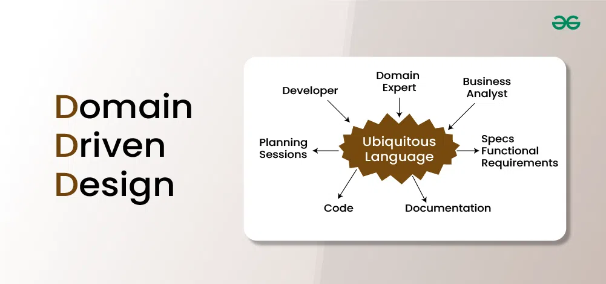

Domain-driven design (DDD) on tarkvara kujundamise lähenemisviis,
mis keskendub tarkvara modelleerimisele, et see sobiks domeeniga vastavalt selle
domeeni ekspertide sisendile.
DDD on vastu ideele omada singulaarset ühtset mudelit; selle asemel jagab see suure
süsteemi piiratud kontekstideks, millest igaühel on oma mudel.
DDD korral peaks tarkvarakoodi struktuur ja keel (klassinimed, klassimeetodid, klassimuutujad)
ühtima ärivaldkonnaga. Näiteks: kui tarkvara töötleb laenutaotlusi, võivad sellel
olla sellised klassid nagu "laenutaotlus", "kliendid" ja
sellised meetodid nagu "aksepteeri pakkumine" ja "välja võtmine".
Domeenipõhine disain põhineb järgmistel eesmärkidel:

| Head | Halvad |
|---|---|
| Edendab tõhusat suhtlust domeeniekspertide, arendajate ja sidusrühmade vahel, kasutades ühist keelt. | DDD võib tekitada keerukust, eriti suurtes domeenides. Keeruliste ärivaldkondade täpne modelleerimine nõuab mitmetähenduslikkuse sügavat mõistmist ja hoolikat juhtimist. |
| Aitab meeskondadel seada prioriteediks rakenduse kõige väärtuslikumad valdkonnad, et saavutada ärieesmärgid. | Keerulistes valdkondades võib erinevate mudelite ja piiratud kontekstide joondamine olla keeruline. Selge suhtlus ja koordineerimine on vastuolude vältimiseks hädavajalikud. |
| Julgustab kujundusi, mis kohanduvad arenevate ärivajaduste ja turutingimustega. | DDD rakendamine võib nõuda uusi tehnoloogiaid ja raamistikke, mis raskendab integreerimist olemasolevate süsteemidega. Jõudluse ja ulatuse probleemide lahendamine on eduka kasutuselevõtu jaoks ülioluline. |
| Säilitab selge vahe domeeniloogika, infrastruktuuri ja kasutajaliidese vahel. | Meeskonnaliikmed võivad traditsiooniliste meetodite tundmise tõttu DDD-le vastu seista. Selle ületamiseks on vaja tõhusat suhtlust ja koolitust DDD eeliste kohta. |
| Toetab täpselt määratletud domeeniobjekte lihtsamaks ja täpsemaks testimiseks. |